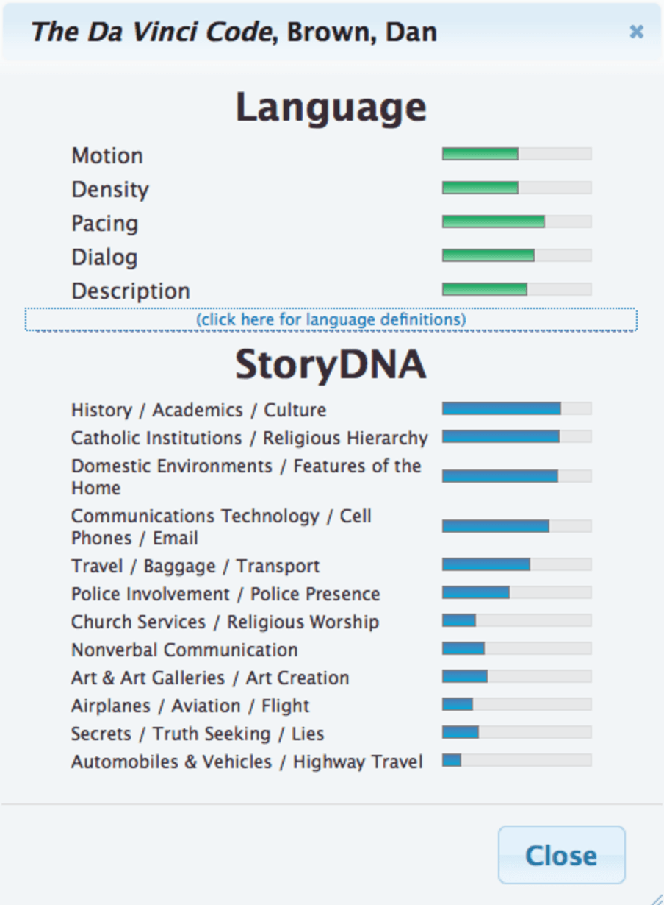
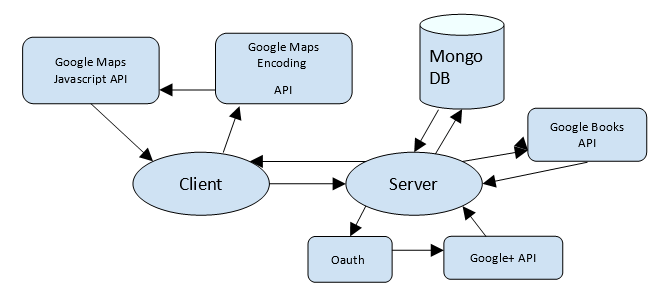
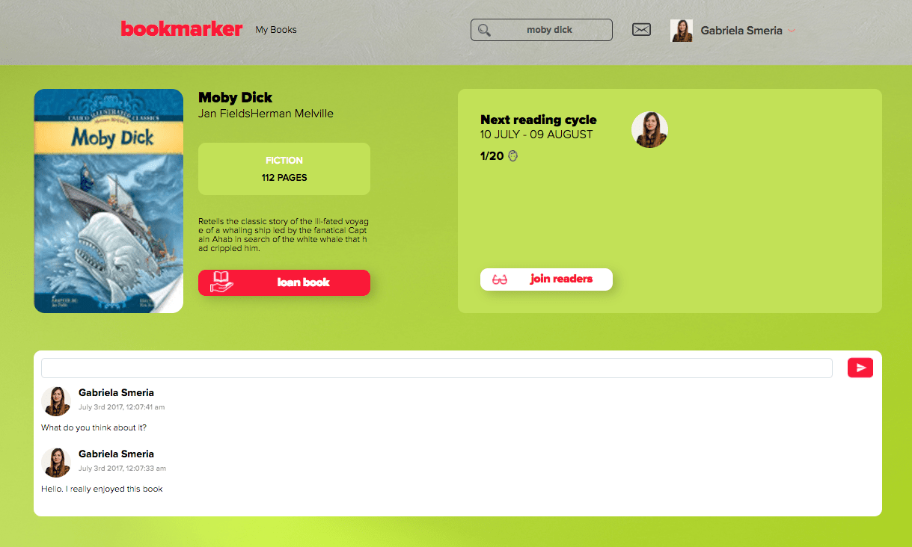

Data publicării: 30.06.2017
Autor articol: Corina Forascu
Pasiunea pentru citit (Frassica, 2011), din ce în ce mai rară în zilele noastre, poate fi crescută și gestionată mult mai bine cu ajutorul unor aplicații special concepute. Ideea dezvoltării aplicației Bookmarker, dezvoltată în cadrul unei lucrări de licență (Smeria, 2017) a luat naștere din dorința firească a oricărui bibliofil de a citi tot mai multe cărți, dorință înăbușită într-o oarecare măsură de lipsa timpului alocat acestei plăceri. Totodată, chiar și atunci când se ivește o după amiază liberă, totodată apare și riscul de a o irosi lecturând o carte care nu este întocmai pliată pe gusturile sau afinitățile noastre.
Această nevoie de a citi, transformată o dată cu trecerea timpului într-o necesitate, se poate corela, în cadrul unei comunități, cu existența unui club de carte (Miller, 2011), care, oricât de promițător ar putea părea la început și pe cât de mult entuziasm ar putea crea în rândul amatorilor de aventură lirică, epică sau dramatică, pe atât de dezamăgitor se poate dovedi faptul că activitățile și lucrurile în cadrul clubului nu merg conform așteptărilor uzuale, dintre factorii ”perturbatori” principali amintindu-i pe următorii:
1. Timpul este insuficient și practic la limita imposibilului în ceea ce privește alinierea unui grup chiar și de 15 indivizi pentru dezbaterea unei cărți.
2. Dificultățile întâmpinate în a procura o carte, fie ea în format fizic sau electronic, într-un timp util, respectând totodată un termen limită.
3. Chiar și atunci când elementul “timp în defavoarea membrilor” este eliminat, poate interveni problema punerii de acord cu o anumită lectură care să fie pe placul tuturor, rezultatul constând, de cele mai multe ori, în alegerea cărții propuse de persoana cu cele mai puternice și concrete argumente.
În scopul soluționării acestei probleme și totodată cu ideea extinderii soluției și la alte grupuri de persoane pasionate de o anumităp activitate modelabilă pe aceleași principii, a fost dezvoltată aplicația Bookmarker care vine în ajutorul nostru prin implementarea unor elemente cheie.
Aplicația Bookmarker oferă recomandări de cărți bazate pe stilurile de lectură selectate la crearea contului de utilizator și completarea profilului.
În ideea în care Bookmarker este conceput pentru a oferi utilizatorului o experiență cât mai bună și o comoditate cât mai ușor de accesat, cele două entități – cartea și clubul de citit – au fost îmbinate într-o manieră în care orice carte aparține unui club și viceversa – orice club aparține unei cărți.
Așadar, cititorului îi scad șansele de a citi o carte care să nu îi fie pe plac, eliminând astfel elementul de irosire a timpului survenit din dezamăgirea lecturării unei cărți nu tocmai pe gusturile lui. Totodată, acestuia i se oferă posibilitatea de a interacționă în timp real cu alți bibliofili care îi împart interesele din punct de vedere cultural prin intermediul chat-ului.
Aplicația asigură și posibilitatea procurării cărții care urmează a fi citită, utilizatorul acesteia având abilitatea de a comunica direct cu ceilalți useri din grup. În cazul în care cineva caută să aibă cartea în format fizic, o întâlnire în viața reală devine posibilă, datorită integrării cu Google maps, locația cititorilor fiind publică. Prin implementarea acestei funcționalități, procurarea unei cărți atât în format fizic, cât și electronic devine mult mai simplă, reducând astfel și din costurile materiale alocate achiziționării unei cărți direct din librării.
Aplicația Bookmarker dispune totodată și de o secțiune de comentarii, menită să țină locul unei dezbateri în interiorul unui grup care împărtășește experiența de a-și fi format o părere ulterioară citirii unei anumite cărți. Așadar, utilizatorul, odată înregistrat în aplicație, are atât posibilitatea de a-și expune părerea, cât și vizibilitate asupra opiniilor altor persoane, astfel încât, după citirea tuturor comentariilor pe baza cărții respective, poate afla tot ce își dorea să afle în urmă participării într-un club de citit.
Nu în ultimul rând, fiecare user în parte poate vizualiza atât pe pagina de start, cât și pe profilul personal activitatea lor în toate cluburile din care face parte.
Aplicația Bookmarker nu este prima pe piața de profil, în lume existând deja unele aplicații cu funcționalități aproximativ similare. După prezentarea pe scurt a celor mai cunoscute și folosite asemenea aplicații, vom urmări comparativ funcționalitățile acestora și ale aplicației Bookmarker.
Goodreads (Kaufman, 2013) este una din cele mai folosite și cele mai cunoscute aplicații pentru iubitorii de cărți. Totodată este o comunitate de cititori care contribuie cu recomandări de cărți, recenzii, participa în concursuri, urmăresc autori, citesc articole speciale, au parte de cadouri și de încă multe alte beneficii.
Este ca o bibliotecă imensă pe care o poţi străbate şi în care poţi vedea rafturile de cărţi a tuturor, recenziile şi notele acestora. Poţi, de asemenea, să adaugi propriile tale recenzii şi să dai o notă pe ceea ce ai citit, eşti în curs de citire sau vrei să citeşti pe viitor. În acelaşi timp, poţi: lua parte la o discuţie de grup, crea un nou club de citit, contacta un autor sau chiar să postezi propria ta lucrare.
Scopurile aplicației:
aflarea numelui tuturor cărților interesante, populare, clasice pe care cititorul avid ar vrea să le citească, pe un anumit stil
citirea recenziilor adăugate de alți useri din întreagă lume.
Adăugarea recenziilor proprii
Participarea la unul sau mai multe cluburi care organizează lunar citirea unei cărți, discuții bazate pe cartea respectivă și concursuri cu întrebări cheie.
distribuirea și compararea listelor de cărți, recomandări, progresul citirii unei cărți cu un prieten
menținerea unei evidențe a tuturor cărților citite, astfel fiind capabil să vezi dacă îți atingi scopul anual de a citi un anumit număr de cărți
Asemănările dintre Bookmarker și Goodreads sunt recomandările de cărți bazate pe anumite categorii prestabilite (Goodreads – stilurile alese când îți creezi cont în aplicații și cărțile citite anterior, Bookmarker – stilurile alese când se crează contul personal în aplicație), adăugarea de recenzii pe o anumită carte, adăugarea unei cărți pe o listă de dorințe, participarea în cluburi de citit și faptul că ambele aplicații preiau datele despre cărți din surse externe – Goodreads de pe Amazon.com, iar Bookmarker de pe Google Books.
Una din diferențele dintre Bookmarker și Goodreads, este faptul că aplicația Bookmarker este axată mai mult pe cluburile de citit și interacțiunea dintre useri. Cluburile de citit corespund unei anumite cărți și sunt predefinite în Bookmarker, spre deosebire de Goodreads unde trebuie create manual și sunt pe mai multe tematici. Astfel, scopul aplicației Bookmarker este atins, userul participând doar în cluburile în care dorește, împreună cu alți useri care au aceleași interese.
O altă diferență ar fi faptul că Bookmarker dispune de un sistem de împrumutare a cărților între useri în urmă unei discuții private. Acest împrumut poate avea două forme, în funcție de modul de citire preferat:
fie userii se întâlnesc în afară aplicației, în viața reală și cartea va fi predată în format fizic (această întâlnire fiind posibilă în condițiile în care toți userii specifică adresa lor la înregistrarea în aplicație și cu ajutorul API-ului de la Google Maps sunt poziționați pe o hartă, această oferind o vizibilitate mai amplă asupra tuturor userilor care ar putea deține o anumită carte)
fie userul care deține carte, o are pe raftul lui de cărți din contul de Google și ii împărtășește celuilalt user un link de descărcare a cărții în format electronic.
LibraryThing (Spalding, 2010) este un site de catalogare și de socializare pentru iubitorii de cărți. Această aplicație ajută la creearea unui catalog de cărți de calitate: cărți pe care le dețne utilizatorul, cărți déjà citite, pe care ar doris ă le citească sau cărți pe care déjà utilizatorul le-a împrumutat.
Deoarece toată lumea cataloghează online, totodată cataloghează împreună. Utilizatorul poate contribui cu etichete, evaluări și recenzii pentru o carte și cunoștințe comune (informații despre o carte sau autor, cum ar fi nume de caractere și premii), dar în același timmp el poate participa la forumurile membrilor sau la programul Critici timpurii (Early Reviewers). Toată lumea beneficiază de munca celorlalți. LibraryThing conectează oamenii pe baza cărților pe care le împărtășesc.
LibraryThing preia informatiile despre cărți (Regan, 2005) de pe amazon.com
Funcționalități:
- se pot adăuga cărți pe raftul propriu de cărți (ori din rezultatele căutării cărții, ori adăugare manuală)
- se pot căuta în cărțile proprii, să fie sortate, să se creeze noi colecții, să se editeze informațiile despre carte, să se printeze o copie a catalogului tău sau să se scrie recenzii și să se aplice tag-uri
- fiecare pagină a unei cărți arată ce useri au cartea și ce părere au aceștia despre ea (tag-uri, recenzii, chiar și linkuri către discuții bazate pe carte)
- profilul propriu permite conectarea cu oameni care împărtășesc cărțile proprii și cu oricine e înregistrat în aplicație
- se pot lista autorii preferați, librăriile sau bibliotecile și se pot insera comentarii către alți utilizatori
- se pot accesa diferite grupuri predefinite pentru anumite topicuri sau se poate crea propriul grup
- există posibilitatea de a fi la curent cu cele mai interesante evenimente, festivaluri de cărți, citiri de către autori, discuții pe anumite cărți
Asemănările dintre Bookmarker și LibraryThing constau în: discuțiile de pe pagina unei cărți, participarea în anumite grupuri și faptul că ambele aplicații își preiau informațiile despre cărți dintr-o sursa externa – Bookmarker de pe Google Books, iar LibraryThing de pe Amazon.com.
Avantajele aplicației Bookmarker fata de LibraryThing sunt: sistemul de împrumutare a cărților între useri (format fizic sau electronic, după preferințe) și faptul ca Bookmarker facilitează cluburile de citit, astfel încât ele sunt predefinite pentru orice carte de pe Google Books.
BookLamp (Kessler, 2011) este un instrument de lectură destinat să ajute utilizatorii de internet să își găsească următoarea carte pe care o vor citi, pe baza preferințelor personale și a cărților pe care le-au citit deja. Site-ul este, în esență, Radio Pandora pentru cărți. Site-ul afișează titluri de utilizatori care au stiluri de citit sau stiluri de scriere similare. Avantajul site-ului BookLamp este că site-ul nu acordă atenție cărților care sunt cele mai populare. Site-ul funcționează exclusiv pe preferințele utilizatorului. Utilizatorul primește o listă imparțială de recomandări bazată mai mult pe ceea ce citește sau a citit, decât pe ceea ce vor campaniile publicitare ca el sau ea să citească. Utilizatorii pot salva cărți pe o listă de lectură și pot căuta cărți după StoryDNA (ADN-ul poveștii lor).

Funcționalități:
utilizatorii se pot înregistra cu un cont de Facebook
cărțile pot fi căutate dupa titlu, autor sau gen
funcționalitatea de a căuta după StoryDNA (ADN-ul poveștii) oferă categorii de cărți pentru a ajuta userii sa găsească cărți cât mai pe placul lor
utilizatorii înregistrați pot crea liste de cărți de lecturat pe viitor
titlurile populare sunt evidențiate pe pagina de start, împreună cu statistici
Asemănarea dintre BookLamp și Bookmarker constă în crearea de liste de cărți pentru viitoare citiri, căutarea unei cărți după titlu și algoritmul de recomandare a cărților, bazat doar pe ceea ce utilizatorul a citit înainte și nu pe cărțile cele mai populare sau sugerate de campaniile publicitare.
BookLamp utilizează descrierile din StoryDNA (ADN-ul povestii) pentru a sugera cărți pe care un utilizator și le-ar putea dori pe baza unei cărți care i-a plăcut în trecut sau cărți care corespund stilului cărților citite anterior, mai degrabă decât cărțile pe care le-a achiziționat în trecut. Obiectivul este o experiență îmbunătățită de navigare online.
Deosebirea constă în funcționalitatea oferită de Bookmarker de a participa în cluburi de citit bazate pe o anumita carte, de a interacționa cu useri cu aceleași interese și sistemul de împrumutare de cărți bazat pe locația geografică a utilizatorilor înregistrați.
ANobii este o aplicație care oferă utilizatorilor o comunitate online de cititori de cărți. Comunitatea este capabilă să descopere cărți noi pe baza a ceea ce alții citesc sau recenzii pe care ceilalți cititori le-au furnizat despre anumite cărți. Aplicația aNobii permite utilizatorilor sa folosească rafturi de cărți și să împărtășească cărți și altor utilizatori. Există o bază de date cu cărți la care au acces utilizatorii și există recenzii ale cărților care pot servi drept ghid pentru a duce cititorii la cărțile pe care vor sa le citească. Aplicația aNobii este ca o bibliotecă online de cărți, recenzii și evaluări. Este o comunitate pentru utilizatori care se reunesc și împărtășesc cărți. Utilizatorii aplicației pot, de asemenea, să se aboneze la rafturile altora pentru a descoperi ce citesc sau ce împărtășesc alte persoane.
Funcționalități:
utilizatorii pot împrumuta cărțile lor cu alți utilizatori
utilizatorii pot da note cărților
se pot adăuga recenzii cărților pentru a aduce beneficii comunității
utilizatorii își pot crea o lista de cărți de care sunt interesați
Asemănările dintre aNobii și Bookmarker constau în: sistemul de împrumutare de cărți, crearea unei liste de cărți de citit pe viitor (wishlist) și recenziile adăugate unei cărți.
Abordările similare cu aplicația Bookmarker, prezentate mai sus, sunt rezumate în următorul tabel, unde se pot observa caracteristicile principale prezente în aplicațiile de mai sus și în aplicația Bookmarker:
|
Funcțio- nalități ———– Aplicații |
Reco- mandări de cărți |
Lista de dorințe |
Sistem de împru- mutare a cărților |
Adăugare recenzii unei cărți |
Căutare de cărți |
Discuții private între utilizatori |
Club de citit |
Goodreads |
✓ |
✓ |
✓ |
✓ |
✓ |
✓* |
|
LibraryThing |
✓ |
✓ |
✓ |
✓ |
|||
BookLamp |
✓ |
✓ |
✓ |
✓ |
|||
Anobii |
✓ |
✓ |
✓ |
✓ |
✓ |
||
Bookmarker |
✓ |
✓ |
✓ |
✓ |
✓ |
✓ |
✓ |
* Aplicația Goodreads conține unele grupuri create de useri bazate pe un anumit topic, nu neapărat cu scopul citirii unei carți, ci mai mult pentru discuții relative unui anumit gen literar.
În urma folosirii unei arhitecturi de tip MVC și totodată modularizată și scalabilă, împreună cu îmbinarea acestor tehnologii,
Aplicația Bookmark are ca utilitate finală transpunerea într-un sistem virtual a întregului proces ce reprezintă organizarea unui club de citit în viata reală, un iubitor de cărți având totul la o distanță de câteva click-uri. Aplicația folosește o arhitectură MVC (Leff, 2001) modularizată și scalabilă, combinând următoarele tehnologii:
- pe partea de client: React, Redux, HTML, CSS, Webpack şi serviciile de la Google – Google Maps Javascript API şi Google Maps Encoding API
- pe partea de server: Node (Tilkov & Vinoski, 2010), Express, MongoDb (online) și serviciile de la Google – Google Books API şi Google+ API
Codul aplicației este împărțit in două mari părți: frontend (client) si backend (server). Astfel toate rutele exportate de server pot fi reutilizate oricând la o integrare cu o altă platformă de client. Arhitectura aplicației este reprezentată în diagrama următoare.

Pentru implementarea bazei de date, aplicația Bookmarker folosește MongoDB ca sistem de gestiune al acesteia, întrucât este ușor de integrat și de folosit în Node.js.
Conexiunea la baza de date se realizează la nivel de server, cu ajutorul pachetului mongodb. Acesta conține metode ce ajuta la conectarea la baza de date, precum și pentru acțiunile necesare pe fiecare colecție din baza de date.
Baza de date a aplicației Bookmarker conține patru colecții: users, bookClubs, messages și comment-threads (i.e utilizatorii aplicației, cluburile de carte create la accesarea fiecărei cărți în parte, mesajele din discuțiile private și comentariile ce reprezinta recenziile adăugate pe pagina cărții).
Design-ul aplicației este unul destul de aerisit, pentru a da libertate utilizatorului sa observe ușor acțiunile pe care le poate face în aplicație. Așadar, pagina de autentificare conține butoanele clasice de logare (atât cu user normal cat și cu contul de Google) și înregistrare, iar fundalul este reprezentat de o imagine cu un băiat care citește, imagine sugestivă pentru scopul aplicației.
În urma înregistrării, cititorul va fi redirecționat pe pagină de start a aplicației, unde va găsi informații despre activitatea lui și va putea vizualiza și un carusel cu niște cărți recomandate pentru el (bazate pe stilurile alese la înregistrarea în aplicație).

Apoi, la accesarea unei cărți, utilizatorul va putea vizualiza cu ușurință informații despre aceasta și despre clubul de citit asociat ei, cât și recenzii oferite de alți cititori.
În concluzie, aplicația Bookmarker rezolvă impedimentele menționate la începutul acestei prezentări, întrucât:
în urma înregistrării în aplicație, utilizatorului îi sunt recomandate niște cărți bazate pe stilurile de citit alese anterior. Cu aceasta funcționalitate, iubitorului de cărți îi va fi mult mai simplu să aleagă o carte care mai mult ca sigur îi va fi pe plac. Când va accesa cartea, un club de citit va fi creat automat pentru cartea respectivă (dacă nu exista deja) și utilizatorul poate să se alăture cititorilor înregistrați în club printr-un simplu click.
-
Pentru a-și procura cartea, un sistem de împrumutare îi stă la dispoziție. Utilizatorul poate vizualiza toți cititorii din club pe o hartă, fiecare din ei fiind poziționați în locul geografic corespunzător adresei introduse atunci când s-au înregistrat în aplicație. Printr-un click pe o persoana de pe hartă, se poate iniția o discuție privată. În funcție de tipul de format al cărții cerute ca împrumut există două soluții. Fie:
format fizic – cei doi care discută se vor întâlni în viata reală și unul îi va preda celuilalt cartea
format electronic – asta presupune ca cel care este contactat s-a înregistrat cu contul de Google și are pe raftul de cărți din Google Books cartea respectivă, iar tot ce trebuie sa facă e sa ii paseze utilizatorului care a inițiat discuția o adresă de descărcare a cărții cerute
În concluzie, alegerea cărții nu mai presupune și implicarea altor persoane, clubul de citit fiind asociat unei cărți recomandate fiecărui utilizator în parte, așadar sigur îi va face plăcere să o citească; sincronizarea calendarelor a N persoane nu va mai reprezenta o problemă, întrucât sistemul se ocupă de asta și procurarea cărților va fi mult mai rapidă cu funcționalitatea de împrumutare de cărți.
În stadiul actual aplicația Boormarker își atinge scopul inițial propus, însă este loc de îmbunatățiri, dintre care putem enumera:
Optimizare algoritm recomandări de cărți
Preluarea cărților din Google Books după categoriile acestora este, actualmente, cam greoaie, de aceea timpul de răspuns e destul de mare. Ar trebui căutată o soluție în rezolvarea acestei probleme sau, de ce nu, apelarea la alte API-uri, cum ar fi cel pus la dispoziție de Amazon.
Campanii de monetizare
Avem în vedere abilitatea utilizatorilor de a putea căuta o carte pe mai multe site-uri, de a putea face o comparare de prețuri și în final, de a se hotărî la o librărie, de unde să o procure. Aceasta funcționalitate ar da libertate cititorului, astfel încât nu ar mai fi condiționat de descărcarea cărții în format electronic sau de a împrumuta cartea de la un alt utilizator. Integrarea cu mai multe librării online ar creste și popularitatea aplicației.
Integrare de notificări pe email
Aceasta funcționalitate ar putea să intervină la fiecare acțiune ce se răsfrânge asupra utilizatorului, cum ar fi: apropierea sfârșitului perioadei de citit sau de făcut dezbatere, ieftinirea unei cărți din lista de dorințe, contactarea de către un alt utilizator pe chat etc. Sau chiar notificarea zilnică/săptămânală de cărți recomandată și pe mail, nu doar în aplicație. Astfel, cititorul ar fi întotdeauna conștient de ce se întâmplă în aplicație, fie ca o accesează sau nu. Bineînțeles, va fi și o modalitate prin care se poate dezabona, pentru a nu fi spamat cu informații inutile.
Cuantificarea popularității utilizatorilor
Aceasta implică setarea unei unități măsuri pe profilul fiecărei persoane, care se autoincrementează pe măsura ce aceasta fie: participă în mai multe cluburi (ceea ce înseamnă că citeste din ce în ce mai mult, teoretic), împrumută foarte des cărți altor utilizatori (ceea ce semnifică faptul că e implicat și ajută la dezvoltarea aplicației), participă în recenzarea unei cărți foarte mult etc.
Optimizarea funcției de discuție privată
Este de dorit ca pe viitor să se poată crea și discuții între mai mulți useri. Pe partea de server această funcționalitate e implementată în asa fel încât se pot crea discuții și între mai mulți utilizatori, însa pe partea de client este nevoie de o schimbare a design-ului.
Referințe
- Frassica, Matt (2011). For ebook devotees, reading is a whole new experience. The Louisville Courier Journal. USA Today.
- Kaufman, Leslie (2013). Goodreads.com Is Growing as a Popular Book Site. The New York Times. ISSN 0362-4331
- Kessler, Sarah (2011). BookLamp Launches a Pandora For Books. Mashable, August 2011.
- Leff, A. and J. T. Rayfield (2001) Web-application development using the Model/View/Controller design pattern Proceedings Fifth IEEE International Enterprise Distributed Object Computing Conference, pp. 118–127, 2001. http://ieeexplore.ieee.org/document/950428/
- Miller, Claire Cain (2011). Need Advice on What to Read? Ask the Internet. New York Times Bits, 2011
- MongoDB Tutorial [Online] http://www.tutorialspoint.com/mongodb/
- Regan, Jim (2005). Do your own LibraryThing. Christian Science Monitor.
- Spalding, Tim (2010). Introducing the “Melvil Decimal System”. LibraryThing.
- Tilkov S. and S. Vinoski (2010). Node.js: Using JavaScript to Build High-Performance Network Programs. IEEE Internet Computing, vol. 14, no. 6, pp. 80–83, 2010. http://doi.ieeecomputersociety.org/10.1109/MIC.2010.145